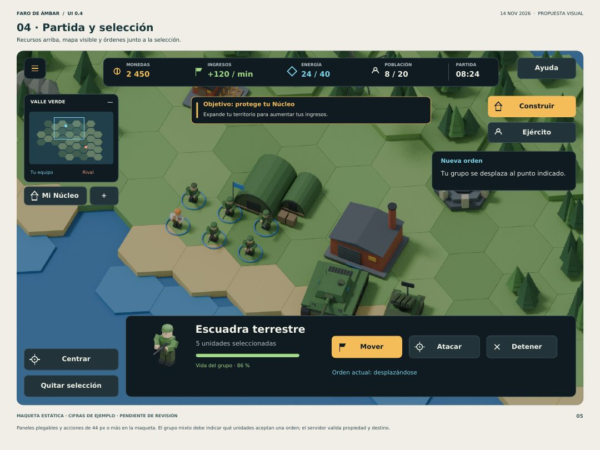

Faro de Ámbar · Prototipo web
Faro de Ámbar
PRD del prototipo web · versión 1.7
Tu UI 0.4 en el juegoCarga en 3 pasos, barra de arriba con etiquetas, barra de selección con vida del grupo y orden actual, y resultado con «Revancha».
Arsenal y vehículos nuevos«Conoce tu ejército» con búsqueda y filtros; Lanzador DF-17 y Lanzador nuclear móvil de un solo uso, modelados con Blender.
Más sólidoEl perfil nunca se pisa si no se pudo leer, como pide la auditoría de tu PRD 1.8.
1. Objetivo
Me mandaste tu Dirección visual UI 0.4 y tu PRD Roblox v1.8 como información para mejorar el juego. Los leí completos. Mucho de lo que piden ya existe en el prototipo web (misiones, inventario, motivos junto a la acción, colocación con aviso). La v1.7 trae lo que falta y se puede probar hoy en el iPad: el aspecto y el orden de tu UI 0.4 donde el juego todavía no lo sigue, el Arsenal, los dos vehículos de tus fotos y un perfil que no se pierde. El mapa no cambia.


2. De dónde sale cada idea
| Lo que dicen tus documentos | Idea para la v1.7 web |
|---|---|
| UI 0.4 · 01 Carga y recuperación: tres pasos con estado y una salida clara si el perfil no responde. «No se simula un porcentaje con un temporizador.» | La carga de la v1.6 ya mide lo real; ahora se muestra en tres pasos con su estado, y si el perfil no se puede leer lo dice y deja elegir. |
| PRD 1.8 · R-07, R-08 y R-09: «no reemplazar datos válidos por valores vacíos tras un fallo»; validar antes de aplicar. | Perfil seguro: si lo guardado no se puede leer, se guarda una copia y no se pisa; cada dato se valida al cargar. |
| UI 0.4 · 04 Partida y selección: recursos arriba con etiquetas, vida del grupo, orden actual, «Centrar» y «Quitar selección». | Barra de arriba con MONEDAS, INGRESOS, ENERGÍA, POBLACIÓN y PARTIDA; barra de selección con vida del grupo y orden actual. |
| UI 0.4 · 09 Arsenal y PRD 1.8 · sección 56: búsqueda, filtros por familia, tarjeta con miniatura real y ficha. | Pestaña «Arsenal» en el vestíbulo con todo lo que hoy existe en el juego (tropas y edificios). |
| UI 0.4 · Referencias 1 y 2 y PRD 1.8 · secciones 50, 55 y 57: Lanzador nuclear móvil de un solo misil (1/1 → 0/1) y Lanzador DF-17 convencional. | Dos modelos nuevos con Blender y el modificador «Arsenal estratégico» en Personalizado, apagado si no lo eliges. |
| UI 0.4 · 06 Producción y 07 Puerto y transporte: plazas reservadas, «Población tras completar», lista de pasajeros. | Lista de pasajeros con nombre y plazas; comunidad reservada y «Comunidad al terminar» en la cola. |
| UI 0.4 · 14 Resultado: tres fichas y «Revancha». | Resultado con tres fichas principales y botón «Revancha». |
| UI 0.4 · 13 Ajustes y PRD 1.8 · sección 56: escala de UI, reducir destellos y sacudidas. | Deslizador «Tamaño de la interfaz» y opción «Reducir destellos y sacudidas». |
3. Historial
| Versión | Fecha | Qué trajo |
|---|---|---|
| 0.1-0.9 | 6-8 nov 2026 | Juego base, campaña, ejército de tierra, mar y aire, misil nuclear y suelo de la v0.6. |
| 1.0-1.3 | 9-11 nov 2026 | Botón «Construir», alianzas, Dúos, rueda, mapas nuevos y los 29 puntos de tu revisión. |
| 1.4-1.5 | 12-13 nov 2026 | Patrullar, veteranas, logros, opciones para el iPad, portada y Núcleo nuevos, sin temporadas del año. |
| 1.6 | 13-15 nov 2026 | Pantalla de carga real, transiciones, motivos junto a la acción, alcance al colocar, «Acerca de» y documento completo. |
| 1.7 | 15 nov 2026 | Esta versión. |